cocos2d-x 学习笔记——瓦片地图TiledMap
本文出自 “夏天的风” 博客，转载时请务必保留此出处：cocos2dx3.4——瓦片地图TiledMap_51CTO博客_cocos creator 瓦片地图
【唠叨】
还记得我们小时候玩的小霸王里面的游戏吗？大部分都是基于Tile地图的游戏，如坦克大战、冒险岛、魂斗罗、吞食天地等。而在手游中，基于瓦片地图的游戏也很常见。如：《保卫萝卜》。
瓦片地图有专门的地图编辑器：Tiled Map Editor 。
先给大家看个酷炫的图吧。
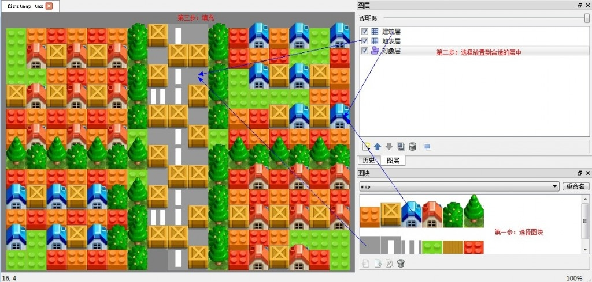
此图来自：Cocos2d-x初入学堂（13）—>Tiled Map Editor地图编辑器_tiled map editor 下载 csdn-CSDN博客
【参考】
http://cn.cocos2d-x.org/tutorial/lists?id=70 （制作基于TileMap的游戏）
http://cn.cocos2d-x.org/tutorial/show?id=1516 （使用瓦片地图详解）
【代码实践】
瓦片地图的应用十分广泛，其知识点也非常丰富。
所以我建议在代码实践中，边写边学，并掌握其基本的用法。
然后再深入研究，效果更佳。
推荐教程： http://cn.cocos2d-x.org/tutorial/lists?id=70
【瓦片地图——概念篇】
在看这部分的概念知识之前，首先保证你已经学习过上面代码实践中推荐的那篇教程。
因为接下来本文所要介绍的知识是：对瓦片地图基本概念的总结以及深化。
本文不再赘述地图编辑器如何使用，或是怎么将瓦片地图导入Cocos工程中使用，之类的问题。
1、地图格式
（1）支持 TMX文件格式 的瓦片地图。（这也是推荐使用的文件格式）
（2）建议瓦片的块大小为32 * 32的倍数 。
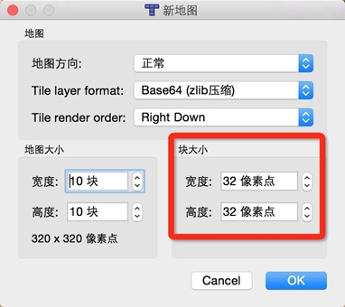
2、地图方向
地图编辑器可以制作三类地图：普通地图（直90°） 、 斜45°地图 、 斜45°交错地图。
除此之外，而Cocos引擎还支持六边形地图。
（1）普通地图（直90°）
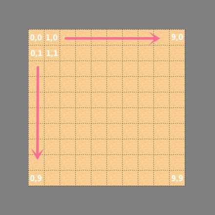
（2）斜45°地图
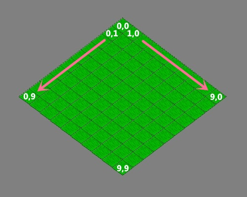
（3）斜45°交错地图
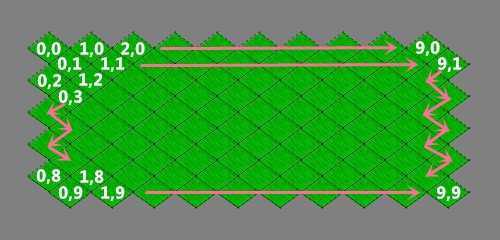
（4）支持六边形地图
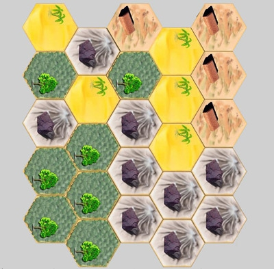
3、瓦片地图坐标系
瓦片地图的坐标系为：
原点： 在左上角。
单位： 瓦片数量。
X轴正方向： 从左到右。
Y轴正方向： 从上到下。
例如： 对于一个 10*10 的瓦片地图文件的坐标系统为：（0, 0）左上角、（9, 9）右下角。
PS：具体坐标表示，已在上面的几幅图中标出。
另外，在地图编辑器中，其实也已经标出了瓦片的坐标。
鼠标移动到某瓦片格子上，左下角就会显示格子的坐标，以及所使用的瓦片素材的GID（关于GID，后面会介绍）。
如下如所示，被选中瓦片格子的坐标为（2，3），所使用的瓦片素材GID为29。
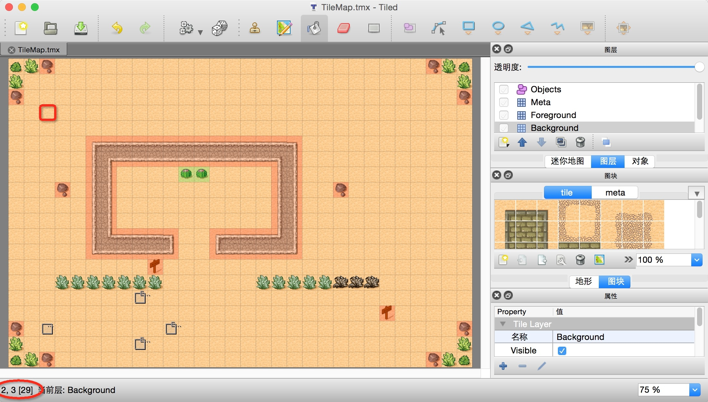
4、地图层（TMXLayer）
瓦片地图支持地图层（TMXLayer）、对象层（TMXObjectGroup）。
（1）每一个地图层可以被表示为TMXLayer类 ，并设置了名称 。（如下图有三个地图层：Meta、Foreground、BackGround）。
（2）每一个单一的瓦片被表示为Sprite类 ，父节点为TMXLayer。
（3）每一个地图层只能由一套瓦片素材组成，否则会出问题。 （如下面的右图所示，有两套瓦片素材（tile、meta），但是一个地图层只能使用一套瓦片素材）。
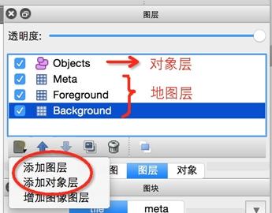
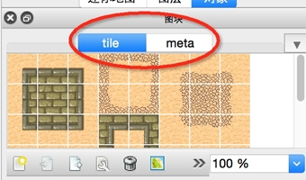
5、对象层（TMXObjectGroup）
（1）用来添加除背景以外的游戏元素信息，如道具、障碍物等对象。
（2）一个对象层可以添加多个对象，每个对象的区域形状的单位是：像素点 。
（3）对象层中的对象 在TMX文件中以**键值对（key-value）** 形式存在，因此可以直接在TMX文件中对其进行修改。
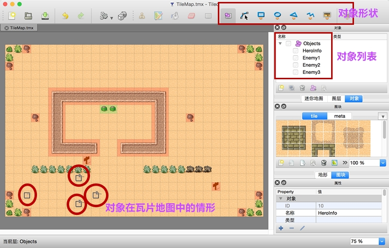
6、瓦片的全局标识GID
在Cocos游戏中，每一个瓦片素材都有一个全局唯一标识GID ，而瓦片的GID就是表示该瓦片所使用的是哪个GID的图块素材。（如上面第三小节提到的那幅图）
GID的计数从1开始，按顺序编号，一直编号到图块的总数量。如下图的tile图块资源中的 ID = 0 的图块编号 GID = 1，以此类推…… tile图块资源中最后一个 ID = 47 的图块对应的GID = 48。
然后对于第二套meta图块资源中的 ID = 0 的图块，对应的 GID = 49。 （是的，继续编号下去……）
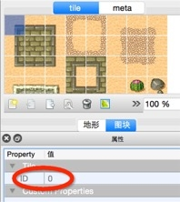
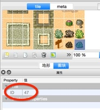
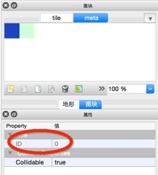
7、瓦片地图的属性值（Properties）
瓦片地图由许多模块构成（瓦片地图、地图层、对象层、瓦片图块、瓦片、对象），其结构图见下面《代码篇》那张图。
每一个模块都可以设置自定义的属性值（Custom Properties） 。我想你在学习《代码实践》中那篇教程时，肯定也设置了自定义的属性。（给瓦片图块设置“碰撞检测”属性、给对象层的某一对象设置“敌人类型”属性等等……）
这些自定义的属性可以在地图编辑器中进行设置，并且可以在代码中获取这些属性以及对应的属性值。
只要点击“目标”，就可以看到它的属性，并且可以添加自定义属性（Custom Properties）。
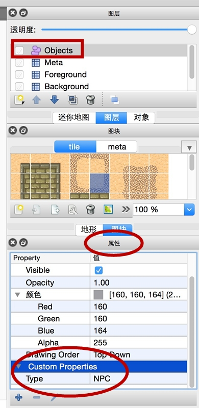
【瓦片地图——代码篇】
瓦片地图的整体结构图如下：
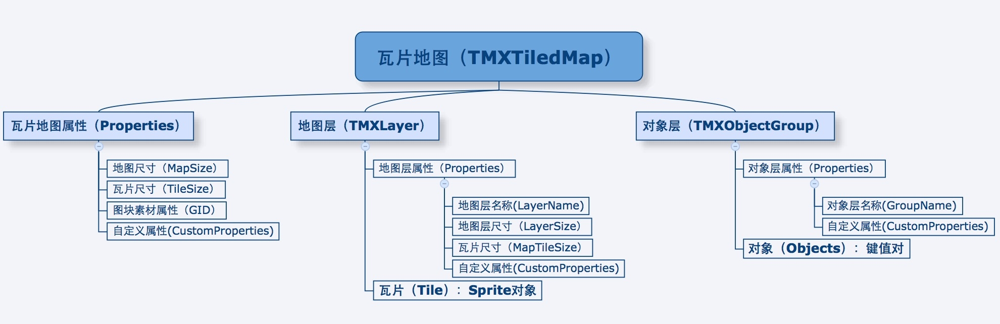
1、TMXTiledMap
TMXTiledMap类为瓦片地图类。其中包含了所有的地图层、对象层、以及瓦片地图的尺寸信息。
其中：
MapSize ： 瓦片地图的尺寸。（以瓦片数量为单位）
TileSize ： 瓦片的尺寸。（以像素点为单位）
核心函数如下：
//
class CC_DLL TMXTiledMap : public Node {
/**
* 创建TMX瓦片地图
**/
// 使用 .tmx 格式的文件创建瓦片地图
static TMXTiledMap* create(const std::string& tmxFile);
/**
* 获取瓦片地图的属性信息
**/
// 获取 瓦片地图的指定名称的属性值
Value getProperty(const std::string& propertyName) const;
// 获取 瓦片地图的所有属性。（键-值对）
void setProperties(const ValueMap& properties); // 可以修改属性
ValueMap& getProperties();
// 获取 瓦片地图的尺寸。（单位：瓦片数量，而不是像素）
void setMapSize(const Size& mapSize);
Size& getMapSize() const;
// 获取 单个瓦片的尺寸。（单位：像素）
void setTileSize(const Size& tileSize);
Size& getTileSize() const;
// 通过GID获取图块的属性，返回Value字典。
// 其实返回的是：ValueMap，即（键-值对）。
Value getPropertiesForGID(int GID) const;
/**
* 获取地图层、对象层
**/
// 获取 指定名称的地图层 TMXLayer
TMXLayer* getLayer(const std::string& layerName) const;
// 获取 指定名称的对象层 TMXObjectGroup
TMXObjectGroup* getObjectGroup(const std::string& groupName) const;
// 获取 瓦片地图的所有对象层。返回对象数组 Vector<TMXObjectGroup*>
void setObjectGroups(const Vector<TMXObjectGroup*>& groups);
Vector<TMXObjectGroup*>& getObjectGroups() const;
};
//
2、TMXLayer
TMXLayer类为地图层类。包含了该地图层中，每个瓦片格子的信息。
其中：
每一个瓦片（Tile）：都被表示为Sprite类。
核心函数如下：
//
class CC_DLL TMXLayer : public SpriteBatchNode {
/**
* 获取地图层的属性信息
**/
// 获取 地图层的名字
void setLayerName(const std::string& layerName); // 可以重新设置地图层名字
std::string& getLayerName();
// 获取 地图层的propertyName属性值
Value getProperty(const std::string& propertyName) const;
// 获取 地图层的所有自定义属性字典。（键-值对）
void setProperties(const ValueMap& properties);
ValueMap& getProperties();
// 获取地图层尺寸。一般等于瓦片地图的尺寸。（单位：瓦片数量）
void setLayerSize(const Size& size);
Size& getLayerSize() const;
// 设置瓦片尺寸的大小。一般与瓦片地图的瓦片尺寸是一样的。（单位：像素）
void setMapTileSize(const Size& size);
Size& getMapTileSize() const;
/**
* 对地图层的瓦片进行操作
**/
// 获取 指定tile坐标的瓦片(Sprite)
Sprite* getTileAt(const Vec2& tileCoordinate);
// 可通过调用如下对其进行删除：
// layer->removeTileAt(Vec2(x,y));
// 或 layer->removeChild(sprite, cleanup);
void removeTileAt(const Vec2& tileCoordinate);
void removeChild(Node* child, bool cleanup) override;
// 获取 指定tile坐标的瓦片对应的OpenGL坐标位置
Vec2 getPositionAt(const Vec2& tileCoordinate);
// 设置 指定tile坐标的瓦片，将其图片变为GID的图块。
void setTileGID(uint32_t gid, const Vec2& tileCoordinate);
// 获取 指定tile坐标的瓦片，所使用的图块的GID。
uint32_t getTileGIDAt(const Vec2& tileCoordinate);
};
//
3、TMXObjectGroup
TMXObjectGroup类是对象层类。包含了该对象层中，每个对象的信息。
其中：
每一个对象： 其所有属性，被存储为ValueMap ，即键-值对 的映射 。
核心函数如下：
//
class CC_DLL TMXObjectGroup : public Ref {
/**
* 获取对象层的属性信息
**/
// 获取 对象层的名称
void setGroupName(const std::string& groupName); // 可以重新设置对象层名称
std::string& getGroupName();
// 获取 对象层的propertyName属性值
Value getProperty(const std::string& propertyName) const;
// 获取 对象层所有属性。（键-值对）
void setProperties(const ValueMap& properties);
ValueMap& getProperties();
/**
* 获取对象层的 对象
**/
// 获取对象层指定的objectName对象，其所有属性被存储为ValueMap（键-值对）
ValueMap getObject(const std::string& objectName) const;
// 获取对象层的所有对象
void setObjects(const ValueVector& objects);
ValueVector& getObjects();
};
//
4、关于瓦片地图的锚点位置
瓦片地图的锚点默认为（ 0，0） ，每个瓦片的锚点默认也为（0，0） 。
PS：锚点是可以设置的，因为它不是继承于Layer，而是直接继承于Node。
下面讲解一下默认锚点的位置信息。
（1）普通瓦片锚点信息
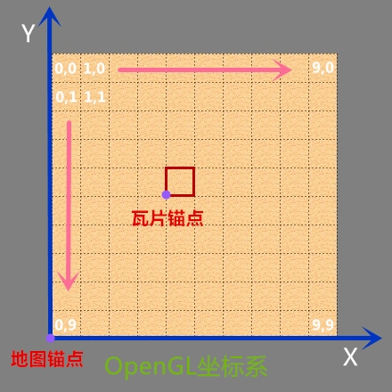
（2）斜45°瓦片锚点信息
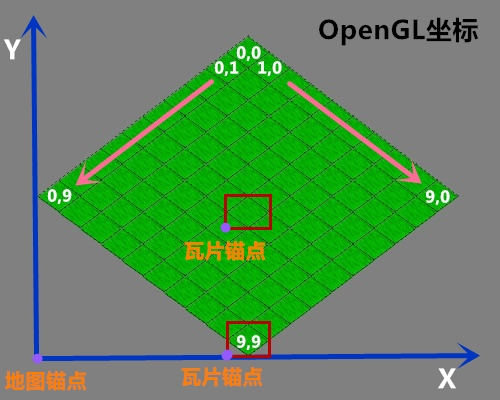
（3）斜45°交错瓦片锚点信息
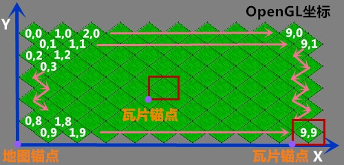
5、Tile坐标 与 OpenGL坐标 相互转换
这里介绍一下普通瓦片（直90°）的坐标转换 。
至于，斜45°的瓦片地图，自己推公式把。。。
//
// OpenGL坐标：原点为屏幕左下角（单位：像素）
// tile坐标：原点为瓦片地图的左上角（单位：瓦片）
// OpenGL坐标 转成 格子坐标
Vec2 tileCoordForPosition(const Vec2& position) {
Size mapSize = tiledMap->getMapSize();
Size tileSize = tiledMap->getTileSize();
int x = position.x / tileSize.width;
int y = (mapSize.height * tileSize.height - position.y) / tileSize.height;
return Vec2(x, y);
}
// tile坐标 转成 瓦片格子中心的OpenGL坐标
Vec2 positionForTileCoord(const Vec2& tileCoord) {
Size mapSize = tiledMap->getMapSize();
Size tileSize = tiledMap->getTileSize();
int x = tileCoord.x * tileSize.width + tileSize.width/2;
int y = (mapSize.height - tileCoord.y) * tileSize.height - tileSize.height/2;
return Vec2(x, y);
}
//
6、遮罩关系
瓦片地图可以包含许多个地图层，那么地图层的遮罩关系是怎么确定的呢？
（1）地图层之间的遮罩关系
如下图所示，每个地图层的 zOrder（渲染顺序） 会根据在地图编辑器中设置的前后关系进行设置。由下往上设置 zOrder 值，最靠后的 zOrder = 0，随后每个图层zOrder+1 。
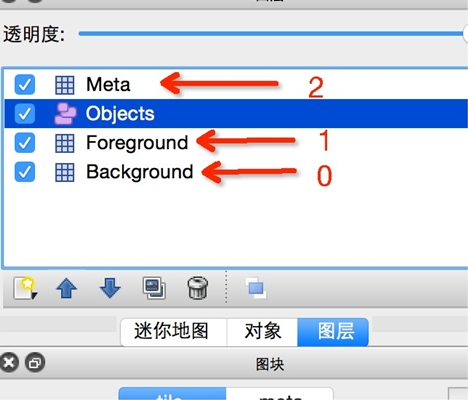
（2）瓦片之间的遮罩关系
其 zOrder（渲染顺序）的值如下所示。
也就是说渲染顺序为：从左往右，从上到下 。
即：下边的瓦片可以遮住上边的瓦片，右边的瓦片可以遮住左边的瓦片。
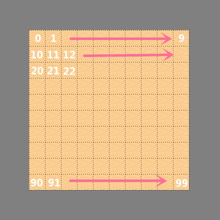
【函数使用举例】
1、瓦片地图类（TMXTiledMap）
1 2 3 4 5 6 7 8 9 10 11 12 13 14 15 16 17 18 19 20 21 22 23 24 25 26 27 28 29 30 31 |
//
// TMXTiledMap::create()
// 加载TMX瓦片地图
tileMap = TMXTiledMap::create("TileMap.tmx");
this->addChild(tileMap, -1);
// tileMap->getMapSize()、getTileSize()
// 获取一个瓦片的尺寸
tileSize = tileMap->getTileSize();
// 获取地图的尺寸大小（转为像素点大小）
// tileMap->getMapSize() 为获取地图宽高的瓦片数量
tileMapSize = Size(tileMap->getMapSize().width * tileSize.width,
tileMap->getMapSize().height * tileSize.height);
// tileMap->getPropertiesForGID()
// 获取图块素材的 GID=49 的所有自定义属性
auto properties = tileMap->getPropertiesForGID(49).asValueMap();
for(auto& value : properties) {
CCLOG("Properties:%s, %s", value.first.c_str(), value.second.asString().c_str());
}
// tileMap->getLayer()
// 获取背景层、前景层、元层
backGround = tileMap->getLayer("Background");
foreGround = tileMap->getLayer("Foreground");
meta = tileMap->getLayer("Meta");
// tileMap->getObjectGroup()
// 获取对象层
objects = tileMap->getObjectGroup("Objects");
//
—-|—-
2、地图层类（TMXLayer）
1 2 3 4 5 6 7 8 9 10 11 12 13 14 15 16 |
//
// backGround->getTileAt()
// 获取瓦片（Sprite），进行放缩
Sprite* sp = backGround->getTileAt(Vec2(2, 19));
sp->setScale(2.0f);
// backGround->setTileGID
// 将(5,17)位置的瓦片，图片设置为 GID=46 的图块素材
unsigned int gid = 46;
backGround->setTileGID(gid, Vec2(5, 17));
// backGround->getTileGIDAt
// 获取(2,19)位置的瓦片，所使用的图块素材的GID
gid = backGround->getTileGIDAt(Vec2(2, 19));
CCLOG("gid = %d", gid);
//
—-|—-
3、对象层类（TMXObjectGroup）
1 2 3 4 5 6 7 8 9 10 11 12 13 14 15 16 17 18 19 20 21 22 23 24 25 26 |
//
// objects->getObject()
// 获取HeroInfo对象
ValueMap heroInfo = objects->getObject("HeroInfo");
// 获取坐标 x,y 属性
float x = heroInfo["x"].asFloat();
float y = heroInfo["y"].asFloat();
// 创建主角
hero = Sprite::create("Player.png");
hero->setPosition(x, y);
tileMap->addChild(hero);
// objects->getObjects()
// 添加敌人
// getObjects：获取对象数组 ValueVector
for (auto&enemy : objects->getObjects()) {
// 获取对象的属性
ValueMap& dict = enemy.asValueMap();
if (dict["Enemy"].asInt() == 1) { // 自定义属性“Enemy”
x = dict["x"].asFloat(); // x坐标
y = dict["y"].asFloat(); // y坐标
this->addEnemyAtPos(Vec2(x, y));
}
}
//
—-|—-